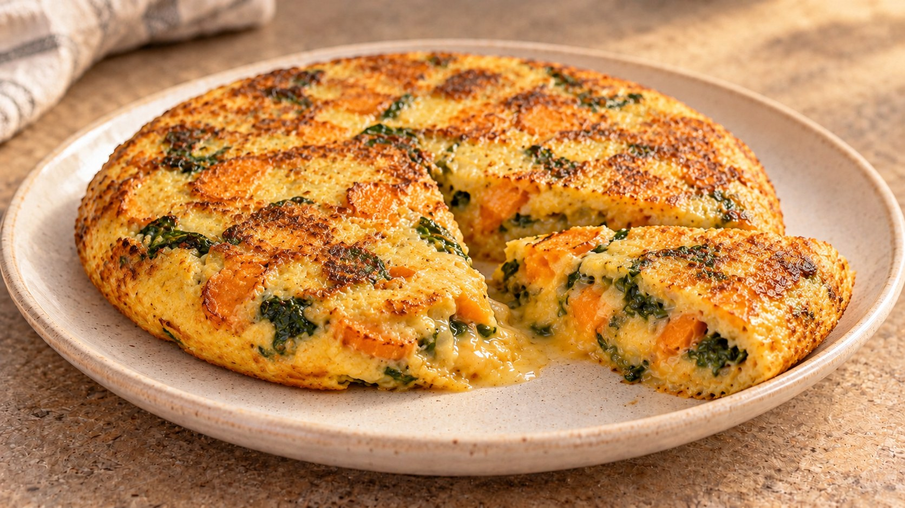

Tortilla de boniato, espinacas y parmesano

Descargar receta en PDF · A4Más de Huevos
Ingredientes
- 300 g boniato pelado
- 100 g espinacas frescas
- 4 unidades huevos grandes
- 30 g parmesano rallado
- 0.5 unidad cebolla (unos 80 g)
- 1 cucharada aceite de oliva virgen extra (15 ml)
- sal y pimienta negra (al gusto)
- nuez moscada (opcional)
- agua (un poco)
Preparación
Pela el boniato y córtalo en láminas finas (2-3 mm). Corta la cebolla en juliana. Las láminas finas ayudan a conseguir una textura melosa, como en la tortilla española de patata.
Calienta el aceite en una sartén antiadherente a fuego medio-bajo. Pocha la cebolla 4-5 min. Añade el boniato, una pizca de sal y 2 cucharadas de agua. Tapa y cocina 12-15 min, removiendo de vez en cuando, hasta que esté muy tierno. Añade unas gotas más de agua si se seca antes de tiempo.
Destapa y evapora el agua restante. Incorpora las espinacas y cocina 1-2 min, hasta que pierdan volumen. Remueve y deja evaporar bien su humedad. Evita tostar demasiado el boniato: debe quedar tierno, no crujiente.
Bate ligeramente los huevos con el parmesano, pimienta y una pizca de nuez moscada, si quieres. Añade el boniato y las espinacas aún calientes. Aplasta suavemente algunas láminas con un tenedor y deja reposar 5 min para integrar los ingredientes.
Engrasa apenas la sartén si es necesario y vierte la mezcla. Cocina a fuego medio-bajo unos 4 min, moviendo ligeramente la sartén al principio. Dale la vuelta con un plato y cocina otros 2-4 min, según el punto de cuajado deseado.
Pasa la tortilla a un plato y deja reposar 2-3 min antes de cortarla. Así se asienta el interior sin perder jugosidad.
Claves
Boniato muy tierno y poco dorado; espinacas sin agua; poca sal porque el parmesano ya aporta. Para una tortilla más alta, utiliza una sartén de 18 cm.
Fuente
🌿 Adaptada de una receta de Eva, la nutricionista